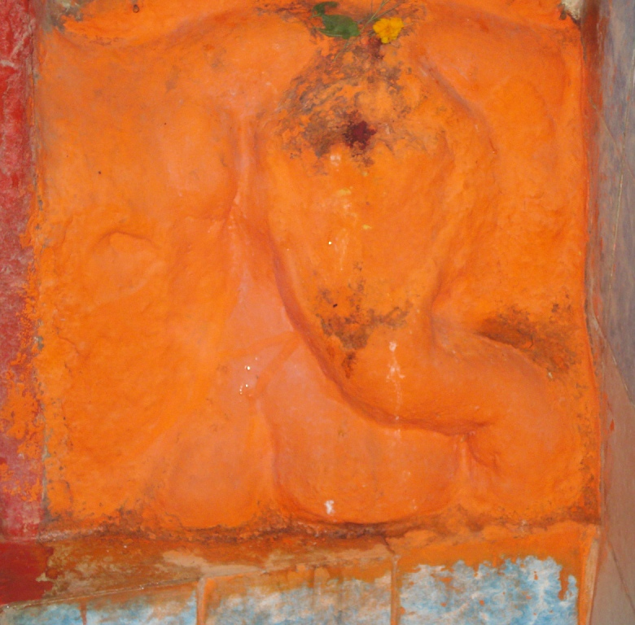

<?xml version="1.0" encoding="UTF-8"?><rss version="2.0"
	xmlns:content="http://purl.org/rss/1.0/modules/content/"
	xmlns:wfw="http://wellformedweb.org/CommentAPI/"
	xmlns:dc="http://purl.org/dc/elements/1.1/"
	xmlns:atom="http://www.w3.org/2005/Atom"
	xmlns:sy="http://purl.org/rss/1.0/modules/syndication/"
	xmlns:slash="http://purl.org/rss/1.0/modules/slash/"
	>

<channel>
	<title>Modak Priya Vinayak &#8211; Varanasi Temples</title>
	<atom:link href="index.html" rel="self" type="application/rss+xml" />
	<link>../../../../index.html</link>
	<description>Temples of Varanasi as referred to in Kashi Khand</description>
	<lastBuildDate>Thu, 19 Jun 2025 05:16:46 +0000</lastBuildDate>
	<language>en-US</language>
	<sy:updatePeriod>hourly</sy:updatePeriod>
	<sy:updateFrequency>1</sy:updateFrequency>
	<generator>https://wordpress.org/?v=4.6.29</generator>
	<item>
		<title>MODAK PRIYA VINAYAK</title>
		<link>../../../../vinayak-temples/modak-priya-vinayak/index.html</link>
		<pubDate>Sat, 08 May 2010 02:25:38 +0000</pubDate>
		<dc:creator><![CDATA[admin]]></dc:creator>
				<category><![CDATA[Modak Priya Vinayak]]></category>
		<category><![CDATA[Vinayak Temples]]></category>
		<category><![CDATA[modaka priya]]></category>
		<category><![CDATA[trilochan]]></category>

		<guid isPermaLink="false">../../../../p=130.html</guid>
		<description><![CDATA[Modak Priya Vinayak is located at A-3/92, Aadi Mahadev Temple, Trilochan.   Worshipping this Vinayak will bring all round success to the worshippers. The temple is approachable from Prahalad Ghat Chauraha upto which place, people can travel by Auto or Cycle Rickshaw. Alternatively, they can have a boat ride upto Trilochan Ghat and climb the steps. [&#8230;]]]></description>
				<content:encoded><![CDATA[<p>Modak Priya Vinayak is located at A-3/92, Aadi Mahadev Temple, Trilochan.   Worshipping this Vinayak will bring all round success to the worshippers. The temple is approachable from Prahalad Ghat Chauraha upto which place, people can travel by Auto or Cycle Rickshaw. Alternatively, they can have a boat ride upto Trilochan Ghat and climb the steps.</p>
<p></p>
<p style="text-align: center;"><strong>(MODAK PRIYA VINAYAK)</strong></p>
<p><strong>Please watch our YouTube Video about Modak Priya Vinayak at following Link </strong></p>
<p>&nbsp;</p>
<p><a href="https://www.youtube.com/watch?v=MbC7Ju8ghLk&amp;t=55s">https://www.youtube.com/watch?v=MbC7Ju8ghLk&amp;t=55s</a></p>
<p>&nbsp;</p>
<p>&nbsp;</p>
<p><strong>TYPES OF POOJAS</strong></p>
<p>The temple is open from 05.00 a.m to 9.00 p.m.   Mangala Aarti is performed at 05.00 a.m., Shringar  at 06.30 a.m., and Aarti at 07.00 a.m. The temple is open till 09.00 p.m.</p>
]]></content:encoded>
			</item>
	</channel>
</rss>
